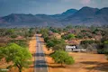
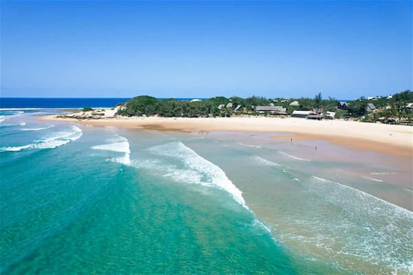

Data
Capital:
Maputo
Area:
801,590 km²
Population:
About 35 million
Official Language:
Portuguese
Currency:
Metical (MZN)
Continent:
Africa
Independence:
June 25, 1975
Weather
Temperature: 25°C
Conditions: Partly cloudy
Wind: South 10 km/h
Wind chill: N/A
Photo of Mozambique
Places to Visit


